栖页 Qiye
栖页 Qiye把准备工作，交给工程。
三家商店的文案、政策、审核说明与素材，按当前实现整理。
商店文案
隐私、支持与审核
可复制商店字段
Chrome Web Store · 简体中文 · 可复制字段
栖页 Qiye · 标签与书签工作台
在一个工作台整理多窗口标签、原生分组与书签，保存会话、休眠后台标签，本地优先，免费使用。
栖页 Qiye 是为 Google Chrome 提供的免费、本地优先的标签与书签工作台。把打开的标签、浏览器原生分组、已保存会话和书签放在一个页面中，通过拖拽完成整理。 整理当前浏览现场 默认展示当前浏览器用户资料中的多个窗口，可切换到对应页面或窗口、调整标签顺序、创建原生分组、休眠后台标签或关闭不再需要的页面。休眠保留标签栏入口；正在使用的标签受到保护。 保存会话，随时继续 把一组网页保存为有名称的会话，之后批量重新打开。支持星标、锁定、克隆、去重与排序。打开的标签代表当前浏览现场，已保存会话用于持久保留网址；关闭原标签不会删除已保存会话。 直接管理浏览器书签 新增、编辑、移动真实书签与嵌套文件夹；将链接拖入文件夹即可收藏。把整组已保存会话拖入书签目录，会创建或复用同名子文件夹，原会话保留。浏览器内置或托管目录受到保护。 查找、暂存与恢复 搜索标签与收藏，把尚未整理的网址先放入暂存区。支持本地快照、收藏导入导出，以及恢复通过工作台删除的收藏内容。直接在浏览器其他界面删除的书签不进入栖页回收站。 按自己的习惯配置 提供中文和英文主要操作界面、浅色、深色和跟随系统外观。9 个设置分区、77 项偏好涵盖保存与打开行为、显示、搜索、快捷键、右键菜单和可选开始页。 默认本地使用，可选连接自己的同步服务 核心功能无需栖页账号或订阅，默认在浏览器本机保存收藏与偏好。可自行连接 WebDAV 或 GitHub Secret Gist，同步已保存会话、暂存和部分偏好；配置前不会自动同步。仅在配置同步时申请对应站点访问。凭据用于所选服务的认证，不进入收藏导出或远端偏好正文。原生书签树的跨设备同步由浏览器自身管理。 使用范围与注意事项 本版本面向桌面 Google Chrome；原生分组和休眠以实际接口能力为准。当前不能完整读取已保存但未打开的工具栏分组，需先打开该组。不会读取完整浏览历史，“最近访问”仅记录通过栖页打开的链接。Secret Gist 为不公开列出的文件，并非端到端加密；导出文件含可读的网址与标题，请妥善保存。外部同步服务由用户自行选择，可能有其自身费用。 版本 1.5.0。支持邮箱：wangzhengxin007@gmail.com
Chrome Web Store · English · 可复制字段
Qiye — Tabs, Sessions & Bookmarks
Organize tabs across windows, save sessions, manage bookmarks, and put background tabs to sleep. Local-first and free.
Qiye is a free, local-first workspace for Google Chrome. Bring open tabs, native tab groups, saved sessions, and browser bookmarks into one place, then organize them with drag and drop. MANAGE YOUR CURRENT BROWSING See tabs across windows in the current browser profile, switch to a page or window, reorder tabs, create native groups, and close tabs you no longer need. Put supported background tabs to sleep while keeping their tab-bar entries available. Active tabs are protected from sleeping. SAVE A SESSION FOR LATER Keep a named set of links and reopen it when you are ready. Star, lock, clone, sort, and deduplicate saved sessions. Closing an open tab does not delete a saved session. Saved sessions and the current tab list serve different purposes. ORGANIZE BOOKMARKS Work with the browser's real bookmarks and folders. Add, edit, and move items, including nested folders. Drag links to bookmark folders; dragging a saved session creates or reuses a named subfolder while retaining the source session. Built-in and managed folders are protected. FIND AND RECOVER Search tabs and saved links, set items aside in a stash, create local snapshots, import and export collections, and recover items deleted through Qiye from its recycle bin. MAKE THE WORKSPACE YOURS Choose light, dark, or system appearance and use Chinese or English controls. 77 preferences across 9 sections cover saving, opening, display, search, shortcuts, context menus, and an optional start page. LOCAL BY DEFAULT, OPTIONAL SYNC Core features work without a Qiye account or subscription. Collections and preferences stay in browser-local storage by default. You may connect your own WebDAV service or GitHub Secret Gist to sync saved sessions, stashed links, and selected preferences. Sync is off until configured. Network access is requested when you configure the service. Credentials are used to authenticate to your selected provider and are excluded from collection exports and synced preference data. Native bookmark-tree sync remains the browser's responsibility. PLEASE NOTE This listing is for desktop Google Chrome. Native groups and sleeping depend on browser support. Saved but closed toolbar groups cannot be fully read; open a group first to manage it. Closed-tab history and a complete browsing history are not collected. Recently opened only records links opened through Qiye. A Secret Gist is unlisted, not end-to-end encrypted. Backups contain readable URLs and titles, so store them carefully. External sync services have their own terms and may charge for their service. Version 1.5.0. Support: wangzhengxin007@gmail.com
Edge Add-ons · 简体中文 · 可复制字段
栖页 Qiye · 标签与书签工作台
在一个工作台整理多窗口标签、原生分组与书签，保存会话、休眠后台标签，本地优先，免费使用。
栖页 Qiye 是为 Microsoft Edge 提供的免费、本地优先的标签与书签工作台。把打开的标签、浏览器原生分组、已保存会话和书签放在一个页面中，通过拖拽完成整理。 整理当前浏览现场 默认展示当前浏览器用户资料中的多个窗口，可切换到对应页面或窗口、调整标签顺序、创建原生分组、休眠后台标签或关闭不再需要的页面。休眠保留标签栏入口；正在使用的标签受到保护。 保存会话，随时继续 把一组网页保存为有名称的会话，之后批量重新打开。支持星标、锁定、克隆、去重与排序。打开的标签代表当前浏览现场，已保存会话用于持久保留网址；关闭原标签不会删除已保存会话。 直接管理浏览器书签 新增、编辑、移动真实书签与嵌套文件夹；将链接拖入文件夹即可收藏。把整组已保存会话拖入书签目录，会创建或复用同名子文件夹，原会话保留。浏览器内置或托管目录受到保护。 查找、暂存与恢复 搜索标签与收藏，把尚未整理的网址先放入暂存区。支持本地快照、收藏导入导出，以及恢复通过工作台删除的收藏内容。直接在浏览器其他界面删除的书签不进入栖页回收站。 按自己的习惯配置 提供中文和英文主要操作界面、浅色、深色和跟随系统外观。9 个设置分区、77 项偏好涵盖保存与打开行为、显示、搜索、快捷键、右键菜单和可选开始页。 默认本地使用，可选连接自己的同步服务 核心功能无需栖页账号或订阅，默认在浏览器本机保存收藏与偏好。可自行连接 WebDAV 或 GitHub Secret Gist，同步已保存会话、暂存和部分偏好；配置前不会自动同步。仅在配置同步时申请对应站点访问。凭据用于所选服务的认证，不进入收藏导出或远端偏好正文。原生书签树的跨设备同步由浏览器自身管理。 使用范围与注意事项 本版本面向桌面 Microsoft Edge；原生分组和休眠以实际接口能力为准。当前不能完整读取已保存但未打开的工具栏分组，需先打开该组。不会读取完整浏览历史，“最近访问”仅记录通过栖页打开的链接。Secret Gist 为不公开列出的文件，并非端到端加密；导出文件含可读的网址与标题，请妥善保存。外部同步服务由用户自行选择，可能有其自身费用。 版本 1.5.0。支持邮箱：wangzhengxin007@gmail.com
Edge Add-ons · English · 可复制字段
Qiye — Tabs, Sessions & Bookmarks
Organize tabs across windows, save sessions, manage bookmarks, and put background tabs to sleep. Local-first and free.
Qiye is a free, local-first workspace for Microsoft Edge. Bring open tabs, native tab groups, saved sessions, and browser bookmarks into one place, then organize them with drag and drop. MANAGE YOUR CURRENT BROWSING See tabs across windows in the current browser profile, switch to a page or window, reorder tabs, create native groups, and close tabs you no longer need. Put supported background tabs to sleep while keeping their tab-bar entries available. Active tabs are protected from sleeping. SAVE A SESSION FOR LATER Keep a named set of links and reopen it when you are ready. Star, lock, clone, sort, and deduplicate saved sessions. Closing an open tab does not delete a saved session. Saved sessions and the current tab list serve different purposes. ORGANIZE BOOKMARKS Work with the browser's real bookmarks and folders. Add, edit, and move items, including nested folders. Drag links to bookmark folders; dragging a saved session creates or reuses a named subfolder while retaining the source session. Built-in and managed folders are protected. FIND AND RECOVER Search tabs and saved links, set items aside in a stash, create local snapshots, import and export collections, and recover items deleted through Qiye from its recycle bin. MAKE THE WORKSPACE YOURS Choose light, dark, or system appearance and use Chinese or English controls. 77 preferences across 9 sections cover saving, opening, display, search, shortcuts, context menus, and an optional start page. LOCAL BY DEFAULT, OPTIONAL SYNC Core features work without a Qiye account or subscription. Collections and preferences stay in browser-local storage by default. You may connect your own WebDAV service or GitHub Secret Gist to sync saved sessions, stashed links, and selected preferences. Sync is off until configured. Network access is requested when you configure the service. Credentials are used to authenticate to your selected provider and are excluded from collection exports and synced preference data. Native bookmark-tree sync remains the browser's responsibility. PLEASE NOTE This listing is for desktop Microsoft Edge. Native groups and sleeping depend on browser support. Saved but closed toolbar groups cannot be fully read; open a group first to manage it. Closed-tab history and a complete browsing history are not collected. Recently opened only records links opened through Qiye. A Secret Gist is unlisted, not end-to-end encrypted. Backups contain readable URLs and titles, so store them carefully. External sync services have their own terms and may charge for their service. Version 1.5.0. Support: wangzhengxin007@gmail.com
Firefox Add-ons · 简体中文 · 可复制字段
栖页 Qiye · 标签与书签工作台
在一个工作台整理多窗口标签、原生分组与书签，保存会话、休眠后台标签，本地优先，免费使用。
栖页 Qiye 是为 Mozilla Firefox 提供的免费、本地优先的标签与书签工作台。把打开的标签、浏览器原生分组、已保存会话和书签放在一个页面中，通过拖拽完成整理。 整理当前浏览现场 默认展示当前浏览器用户资料中的多个窗口，可切换到对应页面或窗口、调整标签顺序、创建原生分组、休眠后台标签或关闭不再需要的页面。休眠保留标签栏入口；正在使用的标签受到保护。 保存会话，随时继续 把一组网页保存为有名称的会话，之后批量重新打开。支持星标、锁定、克隆、去重与排序。打开的标签代表当前浏览现场，已保存会话用于持久保留网址；关闭原标签不会删除已保存会话。 直接管理浏览器书签 新增、编辑、移动真实书签与嵌套文件夹；将链接拖入文件夹即可收藏。把整组已保存会话拖入书签目录，会创建或复用同名子文件夹，原会话保留。浏览器内置或托管目录受到保护。 查找、暂存与恢复 搜索标签与收藏，把尚未整理的网址先放入暂存区。支持本地快照、收藏导入导出，以及恢复通过工作台删除的收藏内容。直接在浏览器其他界面删除的书签不进入栖页回收站。 按自己的习惯配置 提供中文和英文主要操作界面、浅色、深色和跟随系统外观。9 个设置分区、77 项偏好涵盖保存与打开行为、显示、搜索、快捷键、右键菜单和可选开始页。 默认本地使用，可选连接自己的同步服务 核心功能无需栖页账号或订阅，默认在浏览器本机保存收藏与偏好。可自行连接 WebDAV 或 GitHub Secret Gist，同步已保存会话、暂存和部分偏好；配置前不会自动同步。仅在配置同步时申请对应站点访问。凭据用于所选服务的认证，不进入收藏导出或远端偏好正文。原生书签树的跨设备同步由浏览器自身管理。 使用范围与注意事项 本版本面向桌面 Mozilla Firefox；原生分组和休眠以实际接口能力为准。当前不能完整读取已保存但未打开的工具栏分组，需先打开该组。不会读取完整浏览历史，“最近访问”仅记录通过栖页打开的链接。Secret Gist 为不公开列出的文件，并非端到端加密；导出文件含可读的网址与标题，请妥善保存。外部同步服务由用户自行选择，可能有其自身费用。 版本 1.5.0。支持邮箱：wangzhengxin007@gmail.com
Firefox Add-ons · English · 可复制字段
Qiye — Tabs, Sessions & Bookmarks
Organize tabs across windows, save sessions, manage bookmarks, and put background tabs to sleep. Local-first and free.
Qiye is a free, local-first workspace for Mozilla Firefox. Bring open tabs, native tab groups, saved sessions, and browser bookmarks into one place, then organize them with drag and drop. MANAGE YOUR CURRENT BROWSING See tabs across windows in the current browser profile, switch to a page or window, reorder tabs, create native groups, and close tabs you no longer need. Put supported background tabs to sleep while keeping their tab-bar entries available. Active tabs are protected from sleeping. SAVE A SESSION FOR LATER Keep a named set of links and reopen it when you are ready. Star, lock, clone, sort, and deduplicate saved sessions. Closing an open tab does not delete a saved session. Saved sessions and the current tab list serve different purposes. ORGANIZE BOOKMARKS Work with the browser's real bookmarks and folders. Add, edit, and move items, including nested folders. Drag links to bookmark folders; dragging a saved session creates or reuses a named subfolder while retaining the source session. Built-in and managed folders are protected. FIND AND RECOVER Search tabs and saved links, set items aside in a stash, create local snapshots, import and export collections, and recover items deleted through Qiye from its recycle bin. MAKE THE WORKSPACE YOURS Choose light, dark, or system appearance and use Chinese or English controls. 77 preferences across 9 sections cover saving, opening, display, search, shortcuts, context menus, and an optional start page. LOCAL BY DEFAULT, OPTIONAL SYNC Core features work without a Qiye account or subscription. Collections and preferences stay in browser-local storage by default. You may connect your own WebDAV service or GitHub Secret Gist to sync saved sessions, stashed links, and selected preferences. Sync is off until configured. Network access is requested when you configure the service. Credentials are used to authenticate to your selected provider and are excluded from collection exports and synced preference data. Native bookmark-tree sync remains the browser's responsibility. PLEASE NOTE This listing is for desktop Mozilla Firefox. Native groups and sleeping depend on browser support. Saved but closed toolbar groups cannot be fully read; open a group first to manage it. Closed-tab history and a complete browsing history are not collected. Recently opened only records links opened through Qiye. A Secret Gist is unlisted, not end-to-end encrypted. Backups contain readable URLs and titles, so store them carefully. External sync services have their own terms and may charge for their service. Version 1.5.0. Support: wangzhengxin007@gmail.com
品牌素材


440×280 小宣传图
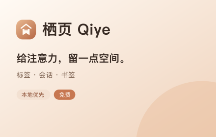
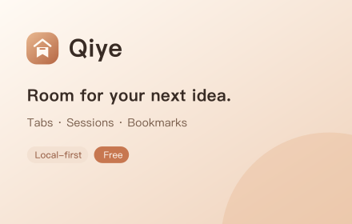
1400×560 大宣传图
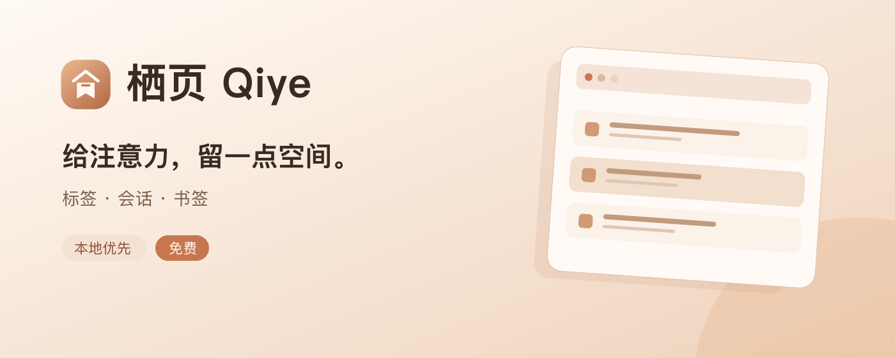
界面截图
以下为实际工作台代码在隔离浏览器中的演示数据画面，不包含用户账号、凭据或私人书签。
简体中文

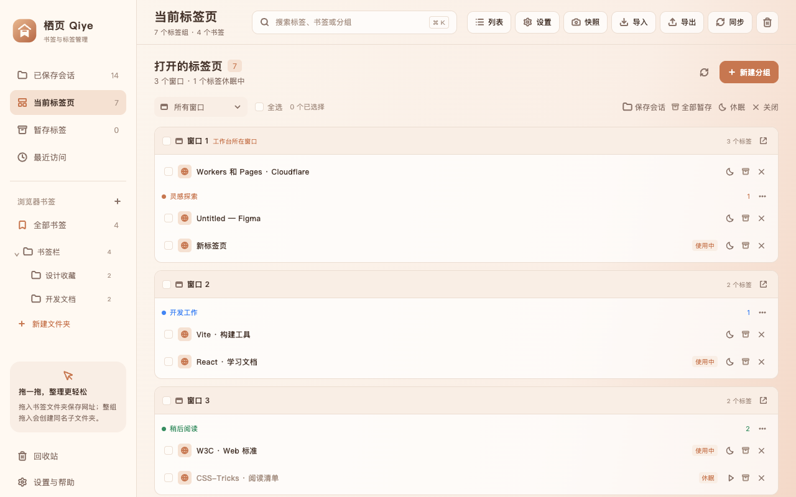

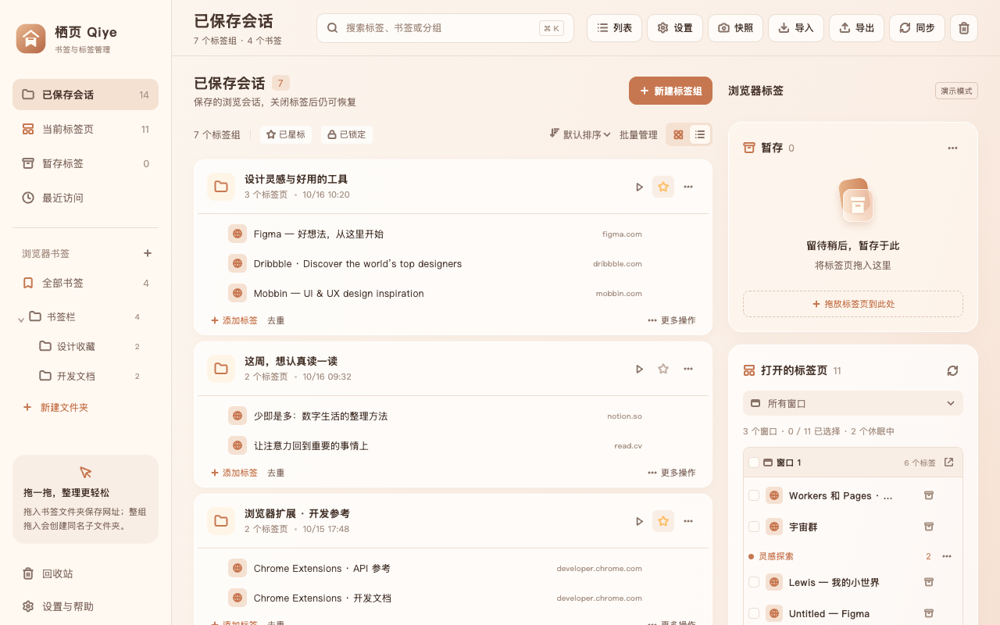

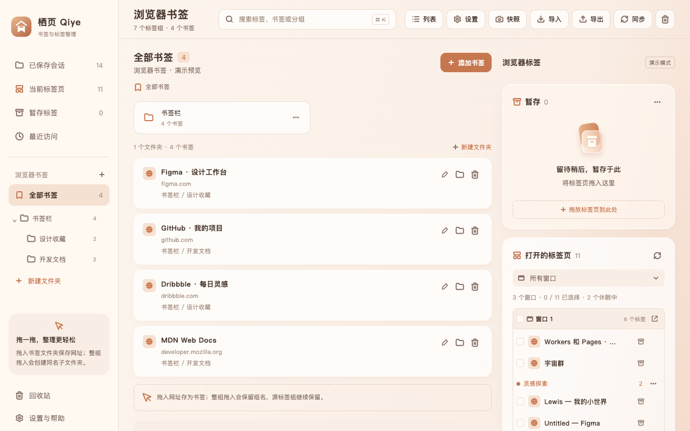

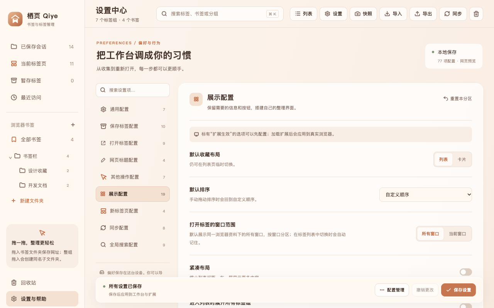

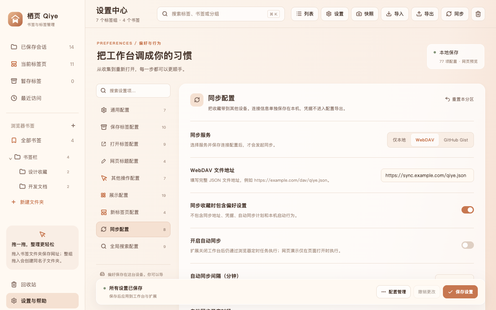
English

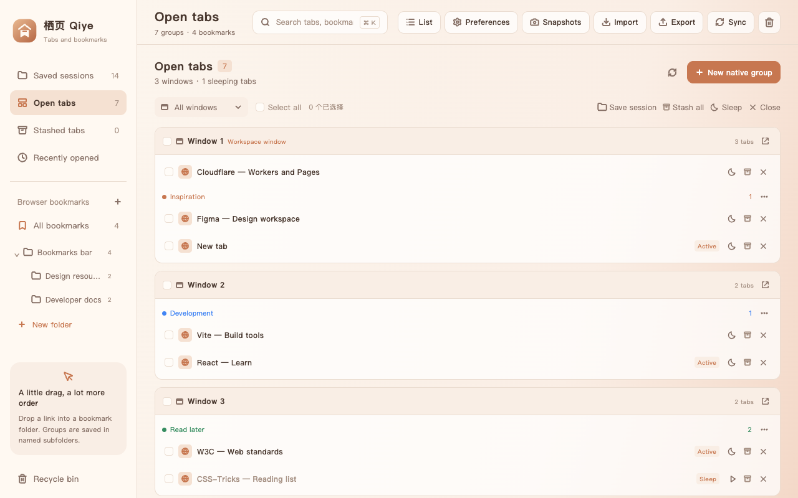

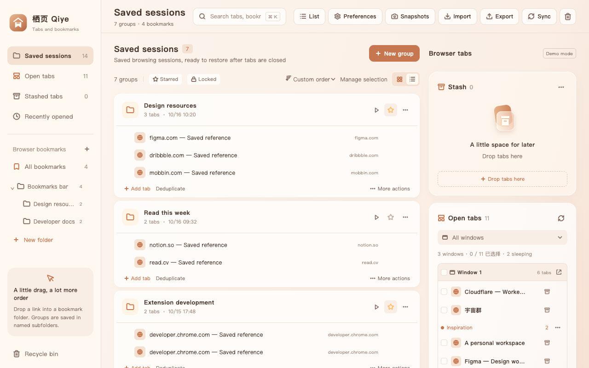

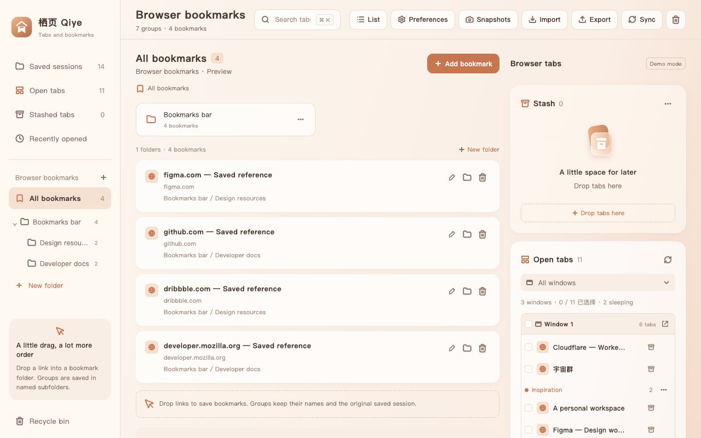

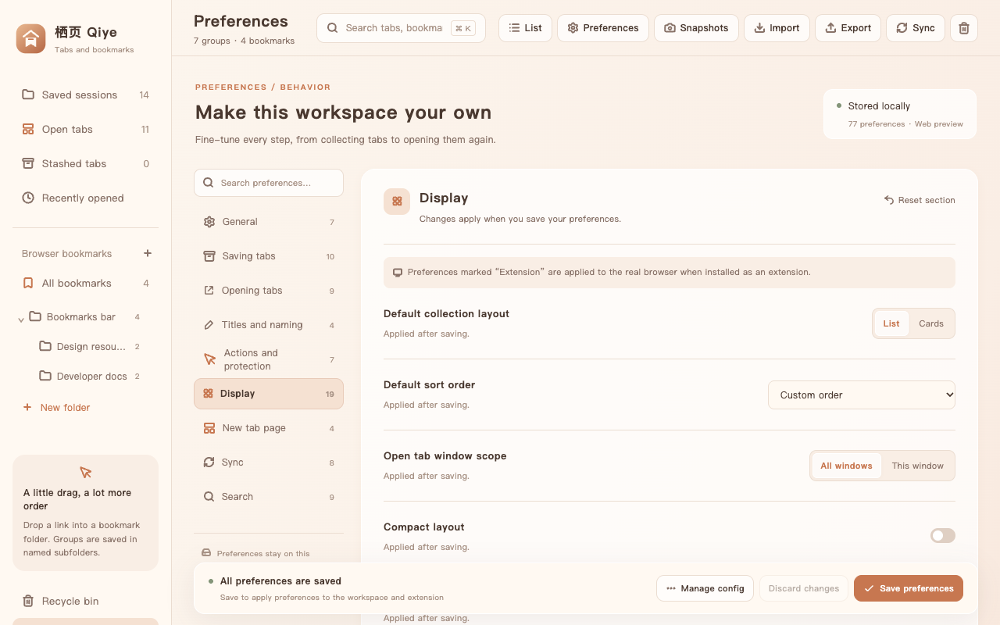

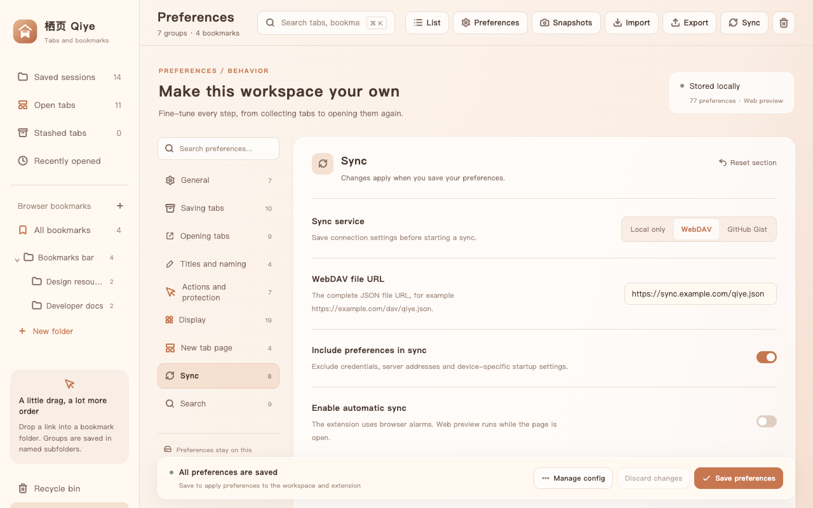